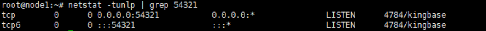

当需要对已备份的Kingbase实例进行恢复时，可以参考本节恢复Kingbase实例至原位置或新位置。
背景信息
支持使用备份副本、复制副本、归档副本进行恢复。支持恢复至原位置（复制副本不支持恢复至原位置，复制副本的归档副本不支持恢复至原位置）或新位置。
操作步骤
- 恢复时如果目标实例正在运行，请先停止目标实例再执行恢复操作。停止实例操作如下：
- 集群实例
- 使用PuTTY登录Kingbase数据库所在主机。
- 执行以下命令，停止集群实例。
/安装目录/bin/sys_monitor.sh stop
- 单实例
- 使用PuTTY登录Kingbase数据库所在主机。
- 执行以下命令，停止单实例。
/安装目录/bin/sys_ctl -D /数据目录 stop
- 集群实例
- 恢复时如果目标实例的端口被占用，请先解除目标实例将占用的端口再执行恢复操作，具体操作如下:
- 使用PuTTY登录Kingbase数据库所在主机。
- 执行以下命令，判断端口是否被占用，其中54321是查询是否被占用的端口，4784是端口的进程ID。
netstat -tunlp | grep 54321
回显如下所示，表明端口已被占用。

- 执行以下命令，解除被占用的端口。
kill -9 进程ID
- 选择“数据利用 > 副本数据 > 数据库 > Kingbase”。
- 您可以以Kingbase实例资源维度或以副本维度查找副本，本节以资源维度为例进行说明。
在“资源”页签，根据资源名称查找到需要恢复的资源，并单击资源名称。
- 选择副本恢复的资源。
- 指定副本或指定时间点进行恢复。
- 指定副本恢复
- 依次选择年、月、天找到副本。
当日期上显示
 ，即表示该月、该天存在副本。
，即表示该月、该天存在副本。 - 单击
 ，进入副本数据页面。
，进入副本数据页面。 - 在副本数据页面单击
 ，单击需要恢复的副本所在行的。
，单击需要恢复的副本所在行的。
- 依次选择年、月、天找到副本。
- 指定时间点恢复
- 依次选择年、月、天找到副本。
当时间上显示
 ，即表示该月、该天存在副本。
，即表示该月、该天存在副本。 - 单击
 ，进入副本数据页面。
，进入副本数据页面。 - 在副本数据页面单击
 ，在时间轴上选择蓝色覆盖区域的副本，单击。
，在时间轴上选择蓝色覆盖区域的副本，单击。
- 对于1.5.0版本，时间轴上最多仅展示100个副本，单击
 可以查看所有副本。
可以查看所有副本。 - 执行时间点恢复时，由于管理界面无法获取恢复时所使用的副本信息，因此，在恢复任务和相关的事件页面，用户无法看到该恢复任务的副本信息。
- 对于1.5.0版本，时间轴上最多仅展示100个副本，单击
- 依次选择年、月、天找到副本。
- 指定副本恢复
- 指定副本或时间点进行恢复。相关参数说明如表1。
表1 恢复Kingbase实例参数说明 参数
说明
恢复至
选择恢复至“原位置”或“新位置”。
位置
当选择恢复至“原位置”时，默认显示当前实例所在位置。
标签
说明：仅1.6.0及后续版本存在此参数。
当选择恢复至“新位置”时，可以通过标签筛选待恢复的资源。
目标主机
当选择恢复至“新位置”时，请选择恢复到的目标主机。
目标实例
当选择恢复至“新位置”时，请选择恢复到的目标实例。
并发进程数
说明：仅在1.6.0及后续版本支持该参数。
并发运行的最大进程数。- 适当的设置可以提高备份或还原的效率，太高的设置会影响数据库实例本身的性能。
- 建议将最大进程数设置为CPU内核数。
恢复前执行脚本
您可以根据实际需求，在恢复任务执行前、执行成功后、执行失败后，执行自定义脚本。此处请输入脚本名称，脚本名称以.sh结尾。
请确保脚本已存放在数据库主机的“DataBackup/ProtectClient/ProtectClient-E/sbin/thirdparty”目录，且登录数据库主机的用户（默认为root）对该脚本有可执行权限。说明：当配置了“恢复成功执行脚本”时，即使该脚本执行失败，OceanProtect上也会显示恢复任务的状态为“成功”。请您留意任务详情中是否有后置脚本执行失败的相关提示，如有请及时修正脚本。
恢复成功执行脚本
恢复失败执行脚本
- 单击“确定”。